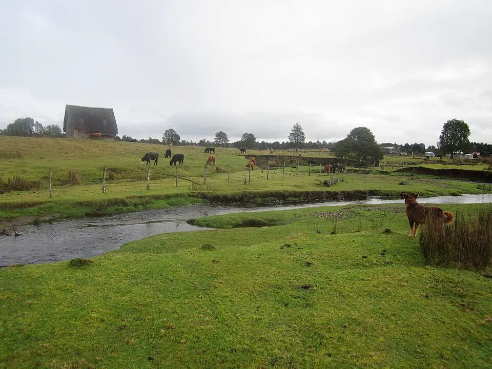

Asentamiento de Monte Verde

Monte Verde es un sitio arqueológico clave para entender el poblamiento de América. Se ubica junto al estero Chinchihuapi, en la actual región de Los Lagos, y fue excavado desde fines de la década de 1970 por un equipo dirigido por el arqueólogo estadounidense Tom Dillehay, con participación de investigadores chilenos. Las dataciones de ese equipo ubican su ocupación principal, llamada Monte Verde II, hace unos 14.500 años.
La turba que cubrió el lugar conservó materiales que rara vez sobreviven: restos de una vivienda alargada de madera y cueros, fogones, herramientas de piedra y madera, huesos de gonfoterios, plantas medicinales, papas silvestres y algas traídas desde la costa. Revelan un grupo con un profundo conocimiento de su entorno.
Durante décadas predominó el modelo "Clovis primero", según el cual los primeros americanos habían llegado más tarde por América del Norte. Monte Verde, validado en 1997 por especialistas que visitaron el sitio, obligó a revisar esa idea y reabrió el debate sobre cuándo y por qué rutas se pobló el continente, incluida una posible vía costera. Una capa más antigua, Monte Verde I, sigue en discusión. En 2026, un estudio publicado en la revista Science propuso que la ocupación de Monte Verde II es mucho más reciente, de entre 8.200 y 4.200 años; el equipo que excavó el sitio y otros especialistas lo refutaron, y el debate sigue abierto.
Versión para niños
Hace unos 14.500 años, según calculan los arqueólogos que lo excavaron, un grupo de personas vivió junto a un pequeño estero en el sur de Chile, cerca de donde hoy está Puerto Montt. Construyeron una casa larga de madera cubierta con cueros de animales. Encendían fogatas, recolectaban plantas y aprovechaban la carne de gonfoterios, unos animales grandes parecidos a los elefantes. Con el tiempo, el suelo húmedo de un pantano cubrió el lugar y protegió sus restos. Gracias a eso, hoy sabemos cómo vivían. Otros científicos siguen estudiando esa fecha; si se confirma, es uno de los lugares habitados más antiguos de América.
Para maestros
Nivel sugerido: 2° básico
Objetivo: Comprender que el territorio de Chile fue habitado desde hace miles de años y que la arqueología permite conocer ese pasado. La fecha lleva "c." porque proviene de dataciones por radiocarbono, que entregan rangos aproximados y suelen expresarse en años antes del presente. Las fechas cambian con nueva evidencia: en 2026 un estudio propuso una edad mucho más reciente y el debate sigue abierto.
Preguntas para la clase:
- ¿Qué objetos dejaron las personas de Monte Verde y qué nos cuentan de su vida?
- ¿Por qué un pantano ayudó a conservar la madera y las plantas?
- ¿Cómo trabaja un arqueólogo para conocer el pasado?
Actividad (20–30 min): "Caja del arqueólogo": en grupos, los estudiantes reciben dibujos de los hallazgos de Monte Verde (vivienda, fogón, plantas, algas, huesos) y deducen cómo vivían sus habitantes. Luego comparten sus conclusiones en un dibujo colectivo del campamento.
Fuentes sugeridas: Museo Chileno de Arte Precolombino; Memoria Chilena; Museo Histórico Nacional.
Objetivos de Aprendizaje (Currículum Nacional)
- 2° básico · HI02 OA 01 Describir los modos de vida de algunos pueblos originarios de Chile en el periodo precolombino, incluyendo ubicación geográfica, medio natural en que habitaban
- 7° básico · HI07 OA 01 Explicar el proceso de hominización … su dispersión en el planeta y las distintas teorías del poblamiento americano
Fuentes
Revisión humana pendiente. Cómo se revisa · Reportar un error
Cómo citar: Historia de Chile. (2026). Asentamiento de Monte Verde. En Historia de Chile: atlas y línea de tiempo. https://moises-salgado.github.io/historia-de-chile/momento/asentamiento-de-monte-verde.html